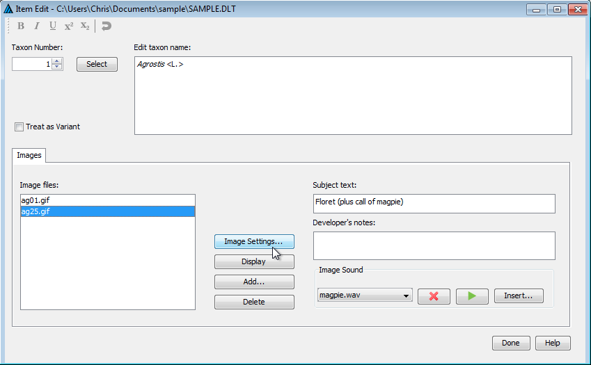

This dialog is provided for the creation or modification of new items and their names. It is opened either by choosing 'View > Item editor' from the menu; by right-clicking the mouse in the upper left pane (the Item Tree) of the Tree View window, and selecting 'Insert new item at this position' or 'Append new item to end of list' from the resulting menu; or by double-clicking on an item name in either the Tree or Grid View. The dialog appears as shown here.

In the upper-left portion of the dialog, a small up-down control allows selection of the taxon that is to be modified. Alternatively, the taxon can be selected from a list by clicking the 'Select' button. A rich edit control in the upper-right corner is used for entering or modifying the taxon name. A toolbar at the bottom of the window provides controls for rendering portions of the text in bold, italics, etc., and for undoing changes.
The 'Images' panel, which occupies the bottom half of the dialog, allows images to be associated with the taxon. On the left side of the panel is a list of the names of image files associated with the taxon. (Note that the program stores only the names of image files within the DELTA data file. It does not store copies of the images themselves). N.B. Although the Editor will accept blanks in image file names, such names should be avoided, as they will not work with other DELTA programs, which use blanks as delimiters. The names within this list may be re-ordered by dragging and dropping with the left mouse button. Clicking on the list with the right mouse button opens a popup menu with options for inserting, modifying or deleting images. Double-clicking (with the left mouse button) on an image file name will cause that image to be displayed in a window of its own.
Clicking the 'Settings' button located near the centre of the panel will open the image settings dialog (described below). Clicking the 'Display' button causes the currently selected image to be displayed. Clicking the 'Add' button allows you to preview and select a new image file to insert in the list (the image is inserted just above the current selection). Clicking the 'Delete' button caused the currently selected image file to be removed from the list. In the upper right portion of the panel is an edit control for entering a 'subject text' for the image. This text is used as a brief label for the image; it is used in the 'Subject' menu and caption of the displayed image to identify the image. A second edit control below this provides a space for entering developer's notes about the image.
In the lower right portion of the panel are controls for associating and previewing one or more sound files with the current image. (As with images, only the names of sound files are stored within the DELTA file. The files themselves are not stored.) A drop-down list box in this region lists the sound files associated with the image. Clicking with the right mouse button on the list opens a popup menu with options for inserting, modifying or deleting sounds. Clicking the x-shaped button causes the currently selected sound to be deleted, and clicking the arrow-shaped button plays the sound. The 'Insert' button allows you to locate, preview, and select new sounds for the image.
The 'Done' button in the lower-left corner causes the dialog to close.
The 'Help' button in the lower-right corner is not functional at present.